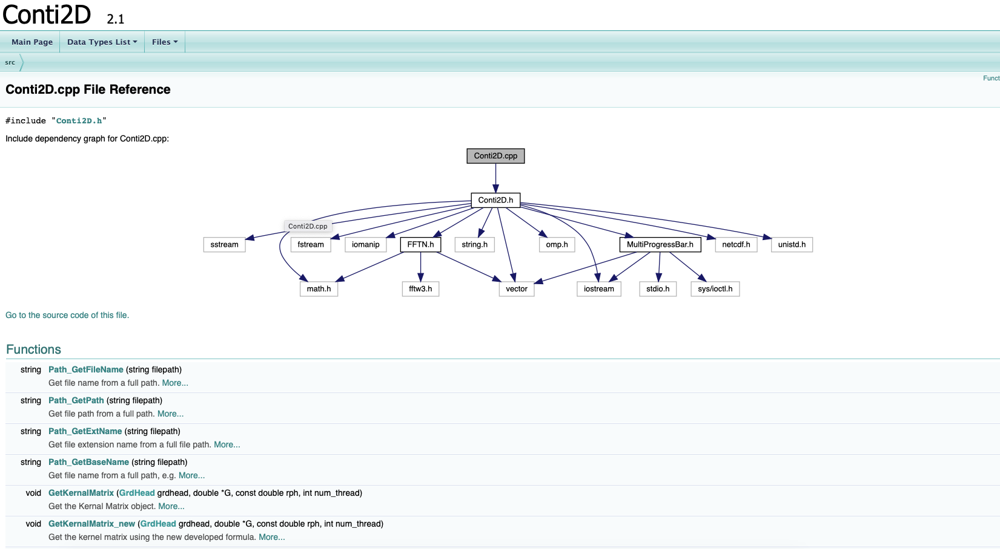
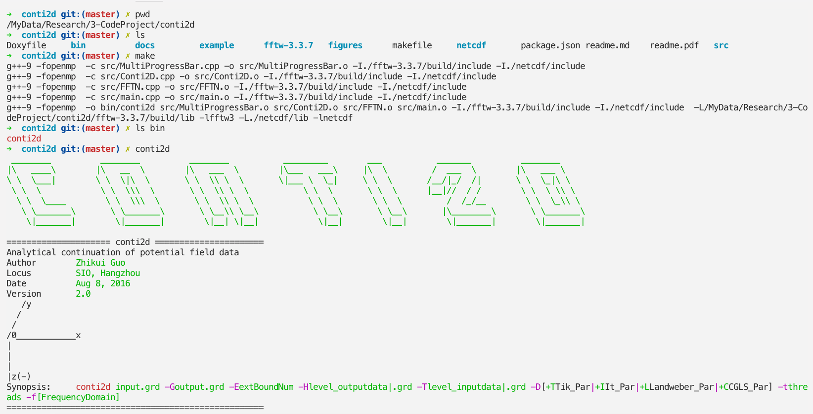

conti2d
Conti2d is a free source and cross-platform C++ program to calculate upward and downward continuation of potential field data. The algorithm is implemented in spatial domain. The source file, precompiled Windows and macOS version are available on Github. The doxygen document of source files can be accessed on github-pages.

The windows version and macOS version can be download and executed directly. The executable file has been tested successfully on several windows computers.
If you can’t run conti2d successfully. Then you can try to build it from source file.
Ø For the windows system, the visual studio 2017 project file and source file are available on Github. Just download and open the vs2017 project file windows/conti2d/conti2d.sln in the main folder. Then rebuild the project and you will get the executable file in the folder of windows/conti2d/x64/release.
Ø For macOS and Linux users, you can clone or download the source file and change directory to the main folder for the source file in the terminal. Then you just type command of make, the executable file will be generated in the bin folder. Just like the following steps in snapshot.

Figure 1. Steps of building conti2d from source on macOS and Linux.
conti2d Inputfile -Goutputfile -EextBoundNum -Hlevel_outputdata|grdfile -Tlevel_inputdata|grdfile -D[+Llandweber_par] -tthreads -f
Note: No space is allowed between the option flag and the associated arguments.
Inputfile
Names of data file to be continued. The supported input file format is ASCII Golden Software Surfer format (see example data file in the attachement)
-Goutputfile
Output file name. The supported file format are ASCII Golden Software Surfer format, netCDF, vtk, which are identified by the extension name .grd, .nc and .vtk respectively. For example, -Gout.vtk means the output grid data file in vtk format, which can be viewed by Paraview. The .nc file can also be view by Paraview. The .grd and .nc file can be plotted by Golden Software Surfer and GMT command of grdimage.
-Hheight
A value represents height of upward continuation.
|
Example: upward continuation from plane of z=0 to plane of z=8 |
|
conti2d mag_plane_0.grd -Gmag_plane_uwc_8.vtk -H8 |
Inputfile
Names of data file to be continued. The supported input file format is ASCII Golden Software Surfer format (see example data file in the attachement)
-Goutputfile
Output file name. The supported file format are ASCII Golden Software Surfer format, netCDF, vtk, which are identified by the extension name .grd, .nc and .vtk respectively. For example, -Gout.vtk means the output grid data file in vtk format, which can be viewed by Paraview. The .nc file can also be view by Paraview. The .grd and .nc file can be plotted by Golden Software Surfer and GMT command of grdimage.
-Tlevel_inputdata
A value represents z level of the input grid data.
-Htopography_outputdata
A grid data file represents the upper surface (topography of the output field data).
|
Example: upward continuation from plane of z=0 to a surface of topo.grd |
|
conti2d mag_plane_0.grd -Gmag_plane_uwc_p2s.vtk -T0 -Htopo.grd |
Inputfile
Names of data file to be continued. The supported input file format is ASCII Golden Software Surfer format (see example data file in the attachement)
-Goutputfile
Output file name. The supported file format are ASCII Golden Software Surfer format, netCDF, vtk, which are identified by the extension name .grd, .nc and .vtk respectively. For example, -Gout.vtk means the output grid data file in vtk format, which can be viewed by Paraview. The .nc file can also be view by Paraview. The .grd and .nc file can be plotted by Golden Software Surfer and GMT command of grdimage.
-Hzlevel_output
A value represents z level of the input field data.
-Tzlevel_input
A value represents z level of the continued field data.
-D+Literation_number
D means downward continuation. L means Landweber method. Iteration_number is the maximum iteration number.
Optional Arguments
-tthreads
A integer (>1) represents how much threads do you want to use. The default value is the maximum threads of your computer.
-Eextension_number
A integer value(>0) represents how much points do you want to extend the boundary. The default value is zero.
Temporary results of iteration
The results of each iteration are saved in an automatically created folder, which name is like inputfile_dwc_p2p_Landwebber. The file name of the temporary results are formatted as result_n.vtk, which are like a time-series data sets and can be played by Paraview to see the iteration and convergence process. And the fitting-smooth curve data is also save in this folder, the data file contains four columns, they are iteration number, fitting, 2th norm of result, smooth, respectively. Then plot the fitting-smooth curve to find the optimal iteration number and the optimal result.
|
Example: downward continuation from plane of z=8 m to a plane of z=0 m |
|
conti2d mag_plane_8.grd -Gmag_plane_dwc_p2p.vtk -T8 -H0 -E5 -D+L500 |
Inputfile
Names of data file to be continued. The supported input file format is ASCII Golden Software Surfer format (see example data file in the attachement)
-Goutputfile
Output file name. The supported file format are ASCII Golden Software Surfer format, netCDF, vtk, which are identified by the extension name .grd, .nc and .vtk respectively. For example, -Gout.vtk means the output grid data file in vtk format, which can be viewed by Paraview. The .nc file can also be view by Paraview. The .grd and .nc file can be plotted by Golden Software Surfer and GMT command of grdimage.
-Hzlevel_output
A value represents z level of the input field data.
-Tzlevel_input
A value represents z level of the continued field data.
-D+Literation_number
D means downward continuation. L means Landweber method. Iteration_number is the maximum iteration number.
Optional Arguments
-tthreads
A integer (>1) represents how much threads do you want to use. The default value is the maximum threads of your computer.
-Eextension_number
A integer value(>0) represents how much points do you want to extend the boundary. The default value is zero.
Temporary results of iteration
The results of each iteration are saved in an automatically created folder, which name is like inputfile_dwc_s2p_Landwebber. The file name of the temporary results are formatted as result_n.vtk, which are like a time-series data sets and can be played by Paraview to see the iteration and convergence process. And the fitting-smooth curve data is also save in this folder, the data file contains four columns, they are iteration number, fitting, 2th norm of result, smooth, respectively. Then plot the fitting-smooth curve to find the optimal iteration number and the optimal result.
|
Example: downward continuation from surface of topo.grd to a plane of z=0 m |
|
conti2d mag_plane_8.grd -Gmag_plane_dwc_p2p.vtk -Ttopo.grd -H0 -E5 -D+L500 -t8 |